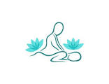

Deixando a vida mais leve.
A massoterapia é uma terapia que utiliza um conjunto de manobras manuais, popularmente conhecido como massagem, para tratar do corpo, da mente e gerar bem-estar em geral. Os benefícios, segundo especialistas, vão desde alívio de dores musculares à melhora da circulação linfática, mas engana-se quem acredita que os seus benefícios são apenas esses. A massoterapia pode, inclusive, auxiliar tratamentos de doenças crônicas e prevenir quadros de patologias graves. Não à toa, suas técnicas manuais são difundidas há séculos em diferentes culturas.
A terapia holística é um conjunto de terapias que visam a promoção da saúde, a prevenção de doenças e agravos, alívio de sintomas e cura, através do cuidado integral do ser humano. Seus componentes, em sua maioria, têm berço na medicina oriental e trazem consigo uma mistura entre o conhecimento prático e científico. Diferente de terapêuticas que focam apenas no problema ou nos sintomas da doença, a terapia holística faz uma análise da pessoa como um todo, em seus aspectos físicos, culturais, psicológicos e sociais. E quando unidos aos tratamentos tradicionais, mostram fortes benefícios e vantagens para o paciente.
A estética muito mais do que atuar na aparência, é autocuidado. Os benefícios de tratamentos estéticos geram reflexos não só no aspecto físico, mas também trabalham o lado emocional e trazem mudanças na autoestima. Isso inclui a dizer que, estes efeitos provocam uma onda de estímulos positivos, que, não só enchem a mente de prazer como também fortalecem a estruturação da autoestima. Por esses motivos que, em 2023, o Espaço Junior Terapeuta, em parceria com o Espaço Clean - Beleza e Estética, incorporou diversos procedimentos estéticos ao seu portfólio de bem-estar e qualidade de vida.
FOTO--FOTO--FOTO---
Nosso espaço está localizado no bairro da Vila Mariana, em São Paulo/SP, e compõe um ecossistema de profissionais e entusiastas de práticas terapêuticas. Estamos preparados para atender as especificidades de cada tratamento com a infraestrutura necessária, profissionais licenciados e as melhores práticas de biossegurança. Garantindo assim, os melhores resultados, conforto e segurança aos nossos clientes. Terapias: Hipnose Clínica, Regressão, Reiki, Numerologia, Astrologia, Cromoterapia, Radiestesia, Aromoterapia, Mesa Radiônica, Terapia Floral, PNL, Registos Akáshicos, Florais Etéreos, Cristais, Ervas, Curva Xamânica Estrelar, Fitoterapia, Ariculoterapia, Constelação Familiar, Elixires e Essências, Baralho Cigano, Tarot, Ciganologia, Chakras, Meditação, Chama Trina, Limpeza Energética, Auto Hipnose, Cocriação, Rituais Mágicos e Elementos da Natureza. Massagens: Relaxante, Sueca, Miofascial, Bandagem Elástica, Shiatsu, Reflexologia Podal, Drenagem Linfática, Modeladora Anti-Stresse, Pedras Quentes, Limpeza de Pele, Massagens com Velas, Gua Shá, Ayurvédica, Thai Massage, Tui Ná, Ventosaterapia, Moxaterapia, Auricular e Tântrica.